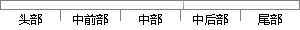

高斯混合模型种类有单高斯模型（SGM）和高斯混合模型（GMM）两类。
片段位置图

相似结果|
相似片段 1：其分为两类，分别是单高斯模型（SingleGaussian Model,SGM）和高斯混合模型（Gaussian mixture model，GMM）。对于此种模型来讲，每一个模型实际上代表着一种
相似片段 2：(SingleGaussianModel，SGM)和高斯混合模型两类。GMM是对单一的高斯概率密度函数的一种延伸，它能够平滑地近似任意形状的密度分布。和聚类算法有些类似，我们可以根据高斯概率密度函数
相似片段 3： model3.2.3 单高斯模型与高斯混合模型区别在上面两小节分别对单高斯模型与高斯混合模型作了相关的介绍，下面以视频背景分割的应用场景为例，简单说明 SGM与 GMM之间在应用上的区别：(1)SGM 和 GMM 都
相似片段 4：(SingleGaussianmodel，SGM)、高斯混合模型(Gaussianm xturemodel，GMM)、多高斯聚类(MultipleGa ss anclusters，MGC)等，这里作为代表简要介绍
相似片段 5：类”。3.3.1 GMM基本理论高斯模型分为单高斯模型（SGM）和混合高斯模型（GMM）两种。顾名思义，混合高斯模型是由多个单高斯模型组合构成。每个 GMM由K 个单高斯分布组成，每个高斯分布被称为 GMM的一个高斯分量，这些高斯分量线性加成在一起就组成了 GMM的概率密度函数。
相似片段 6：(2)高斯混合模型 GMM由于 SGM 只是对训练样本分布的一种逼近，为了利用更加精确的肤色模型表示肤色分布，可使用高斯混合模型 GMM。比如样本向量 ? ?nxxX ,,1 ?? ，假设每个点都由
相似片段 7：模型即高斯密度函数估计是一种参数化模型。根据高斯核的个数，可以分为单高斯模型（Single Gaussian Model，SGM）和高斯混合模型（Gaussian mixture model，GMM
相似片段 8：单高斯模型(SGM)和混合高斯模型(GMM)两种。混合高斯模型是由多个单高斯模型组合而成，每个混合高斯模型是由K个单高斯分布组成，每个单高斯分布称为混合高斯模型的一个高斯分量，所有的高斯分量通过线性
相似片段 9：。通常铭用的是样本数据的平均值，三用的是样本数据的方差。不同种类的样本数据明显有不同的“和三，所以只需把X代入上述公式，设定每一个类别的阂值，输出概率大于阂值就判定X属于C类。(2)高斯混合模型(GMM
相似片段 10：功率图3-1本文算法基本原理框图Fig．3．1Theschematicsofproposedalgorithm3．1高斯混合概率模型高斯混合模型(GMM)是高斯模型的一种，是由单高斯模型
|
※ 片段修改建议 ※
近似词参考：- 混合：夹杂 混淆
- 模型：模子
- 模型：模子
- 混合：夹杂 混淆
- 模型：模子
系统自动生成语句：高斯夹杂模子种类有单高斯模子（SGM）和高斯夹杂模子（GMM）两类。
注：本片段修改建议为系统自动生成，仅供参考。